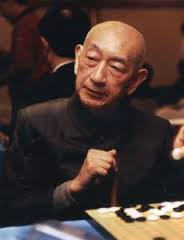
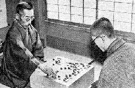
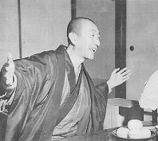

吴清源简介
生平简介
吴清源（1914年6月12日－2014年11月30日），名泉，字清源，以字行，出生于中国福建，现代围棋名家，日本退休职业棋士，又号“昭和棋圣”。七岁开始学棋，数年后已难逢敌手，有“天才神童”之称。后来获旅华日本棋手井上孝平五段赏识，引荐给日本围棋长老濑越宪作七段。其后远赴日本，称雄日本棋坛数十年，开创新布局，获棋坛誉为“现代围棋第一人”。
早年生活与东渡日本
1914年6月12日（中华民国三年旧历五月十九日），出生于福建省闽候县（今属福州市），为家中第三个儿子。当时其父亲吴毅正留学日本，期间曾接受中川龟八郎指导围棋，同年10月举家从福建迁居北京。吴清源祖籍中国浙江杭州石门，其祖父吴维贞曾为官福建闽侯道台，亦热爱围棋，后来家道中落。七岁起跟爸爸学棋。青少年时期，在中国棋坛中已无敌手，当时的北洋政府总理段祺瑞曾经赞助他生活费一年至失势且曾对奕一局
曾与吴清源对奕过的美术商山崎有民将此棋谱寄给当时日本的围棋界的长老濑越宪作七段，濑越认为吴清源是难得一见的天才，在山崎居中牵线下，濑越决定请他来日收他为徒。1928年，濑越派高足桥本宇太郎专程去北京，办理吴清源来日的具体事宜，同时正式考察一下吴清源的棋力。结果桥本四段让先两局皆败。
1928年10月，吴清源14岁时，与母亲及长兄吴浣一起东渡。日本棋院以假定三段格进行正式的“段位认定”对局。吴清源第一位对手是当年大手合最优胜者篠原正美四段，手合为吴清源受先。二人激战三天，篠原最后中盘告负。接着，秀哉名人上场，吴清源受二子。结果黑棋以四目胜而终局。秀哉局后评道：“黑棋态势极庄重坚实，成功地将优势保持到终局，布武堂堂，未给白以可乘之隙。此二子局可作为快心之杰作。”再胜前田陈尔四段、最后村岛四段出场，吴清源黑棋五目胜，遂被正式定为三段。
新布局年代
他到了日本后刻苦好学，棋艺越来越精进。从1929年至1932这三年时间，吴段位不高，执黑棋为多，以秀策流为主体，战绩辉煌，获得了“黑先无敌”的美誉。例如1932年的对局成绩是44胜5败1平，升为五段。
升入五段之后，吴清源执白增多，由于当时无贴子的规定，若仍然照昔日的小目定式，白棋无论如何会落后于人。吴清源开始打出三三或星的布局，一手占据角地，尽快向边展开。这种思路在吴清源看来是理所当然的，但以小目缔角为传统的日本棋界却受到巨大震动。
世纪之决战：名人对吴清源
1933年（昭和八年），读卖新闻主办了“日本围棋选手权战”，参加者为当时实力最强的16名棋士，棋战优胜者可获受先与秀哉名人对弈一局的荣誉。最后吴清源在决胜中打败桥本宇太郎，成为优胜者。比赛之前，各新闻报均以“不败的名人对鬼才吴清源的决战”的标题大肆宣扬。此时正值日本策划“满洲事件”，中日关系异常险恶，因此这盘棋从始至终笼罩着“中日对抗”的色彩。
布局中吴清源将黑棋第一、三、五三著，按三三、星、天元的顺序著出来，此举顿时引起轩然大波。这三手棋皆与日本传统布局格格不入，尤其是三三，在本因坊一门中被称为“鬼门”定为“禁手”，若坊门子弟下此手是要逐出师门的。
这局棋从1933年10月16日开始，直到次年1月19日宣告结束。从白六开始，一直进展到中盘，基本上旗鼓相当，黑棋未失先著效力。弈到黑159手时，黑棋略微优势，但是在关键时刻，秀哉打了出第160的妙手，吴清源终以二目败而终局。
昭和棋圣
镰仓十局
“吴清源时代”的到来基本上是与本因坊秀哉名人的引退联系在一起的。秀哉决定引退的那一年（1938年），将世袭数百年之久的“本因坊”家元（名衔）转给日本棋院拥有。秀哉退休后，名人（即九段）腾出，当时日本棋坛八段以上成为真空，七段位的，除了几位元老级棋士外，年轻的棋士只剩下木谷实和吴清源了。
为决定谁是日本棋界的王者，读卖新闻社主办了，“吴清源、木谷实擂争十局棋”。这就是日本围棋史上著名的“镰仓十番棋”。
1939年9月28日，木谷实于“镰仓十局”第一局执黑，占低位坚实取地。吴清源则执白构成大模样，黑棋陷入苦战。谁知吴清源在第120手时走出失著，遭木谷实猛烈反击，造成大劫。此时双方聚精会神下棋，忽然木谷实鼻孔流血侧身昏倒，而吴清源由于专注思考，竟没有注意到周围发生了什么事情，后来有的读者投书报社质问吴清源。
打劫的结果白棋净损七目，败局已无可挽回。不想，在收官的紧要时刻，木谷实也走出失著，吴清源再次挑起劫争，终于实现逆转，获两目胜。
“镰仓十局”至1940年10月第六局下完后，吴清源五胜一败，将木谷实的交手棋份降为“先相先”（即三局中两局执黑）。
十番棋的霸者
吴清源自战前的“镰仓十番棋”开始独霸擂台，连续15年的升降十番棋里，将日本所有一流棋士与之对局的交手棋份一一降级，不是降为相差一段的先相先，就是降为相差二段的定先。这16年，是他的全盛时代，因此被称为“吴清源时代”。直至后来无人可战，升降十番棋不得不结束。此后，吴被称为“十番棋之王”、昭和棋圣。
人物评价
吴清源自1939年的“镰仓十番棋”开始独霸擂台，连续15年，将日本所有一流棋士与之对局的交手棋份，不是降为相差一段的先相先，就是降为相差二段的定先。这16年，是他建立辉煌业绩的全盛时代，因此被称为“昭和之棋圣”，但他本人并未接受这一称号，因吴清源认为只有孔子一类的人才称得上“圣”。
1987年，日本“围棋俱乐部”征求六位超一流棋手加藤正夫、武宫正树、林海峰、赵治勋、小林光一、大竹英雄的意见：谁是围棋史上最强者？赵、林、武宫、加藤异口同声地回答说是吴清源。小林和大竹则认为，历代的高手们处在不同的年代，要作比较是很困难的。如果非要问谁最强，大致可以列举三位：道策、秀策、吴清源（前二者均已被称为棋圣）。